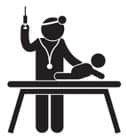

Haydi çocuklar aşıya!
Böyle demeyin tabi, nereye gittiğimizden çocuğun haberi olmasın. Parka, markete, babaanneye, alışveriş merkezine diye çıkın. Geçerken sağlık ocağına uğrayıverin. Yanınıza da emzik ve -eğer vermeye başladıysanız- meyve suyu alın çıkarken. (Çocuk hâlâ emiyorsa memelerin zaten seninle.) Aşı biter bitmez, en sevdiği meyve suyu biberonunu sok bebeğin ağzına ve aptallaşsın. Garanti veriyorum ikinci yudumdan sonra aşıyı unutacak.
Çocukların aşılarını takip etmek hepimize karmaşık geldi, sana da öyle gelecek. Aşı zamanı ne zaman, bir dahaki aşıyı ne zaman yaptıracağım, atladığım bir aşı var mı diye tuhaf tuhaf bakınacaksın etrafa. Doğum yaptığın hastaneden bir tane aşı takvimi isteyebilirsin. Genelde hepsinde bulunuyor.
Fakat bu kartlarda atladıkları bir şey var: Bir sonraki aşının tarihi. Yaptıkları aşının tarihini kartlara işliyorlar. Ben hemşireden hemen yanına bir sonraki geliş tarihimizi de yazmasını istiyordum.
Aşıyı yaptırdıktan sonra sorulan geleneksel sorular var:
1- Banyo yaptırabilir miyim? Aşıya göre, evet ya da iki gün sonra, diyorlar. En iyisi aşıya gitmeden bir gece önce bebeği yıka ve öyle git.
2- Ateş yapar mı? Aşıya göre, evet ya da hayır, diyorlar. Her evet dediklerinde çocuklar hiç ateşlenmedi ve fakat her hayır dediklerinde ateşlendiler. Ne oldu, neden öyle oldu ben de anlamadım. Name’nin bir aşısında sağlık ocağındaki hemşireye bunu hatırlattım. Demek ki o gün ateşlenecekleri varmış, dedi. İşte bu kadar. Başka soru sormadım.
Aşı yaptırırken doğal olarak ağlıyorlar, sonra susuyorlar.
Ha bir de tuhaf bir anımı anlatacağım bak. Dünyaya boş gözlerle baktığım ve söyleneni hemen kavrayamadığım ilk günlerdi. Fena halde, yeni, acemi ve kaygılı bir anneyim. Bir aylık falanlar herhalde. İkizleri aşıya götürdüm. Tam içeri gireceğim, hemşire bebeği aldı, bana, siz isterseniz gelmeyin sütünüz kesilebilir, dedi.
Saflığıma geldi, bana da mı iğne yapacaksınız, diye sordum. Yok dedi, bebek ağlayınca anne etkileniyor, sütü kesilebiliyor. Yok beyaaa, dedim, bana bişey olmaz, çekil sen kenara, zaten süt de yok, ver çocuğumu, dedim, tutarım ben kendim. Fakat sonra hemşirenin neden öyle dediğini anladım. Bir gün bizim gibi aşıya gelen bir anne babanın, çocuğu aşıya kendi anneleriyle birlikte getirdiklerini ve anneanne aşıyı yaptırırken bunların sarılıp birbirlerini teselli ettiklerini gördüm. Ağzım açık halde onları izlerken kendi kendime sordum: Allah’ım ben niye böyle değilim?!!
Neyse ki cevabı buldum. Kendi çocukluğunu hatırla. Okulda aynı iğnenin ucunu çakmakla yaka yaka aşı yaptılar bizim neslimize. Sen okulda ağlarken annenle baban evde sarılıp ağlıyorlar mıydı sence?